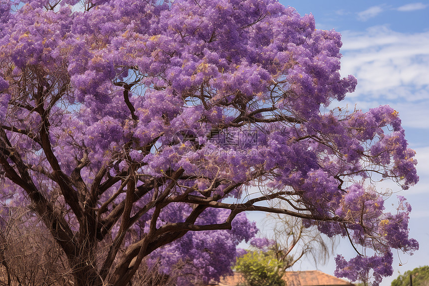

苦难既然把我推到了悬崖的边缘，那么我就在这悬崖的边缘坐下来，顺便看看悬崖下的流岚雾霭，唱支歌给你听。
人生，总有一些未能追上的风筝，在记忆深处摇曳成永恒的幻影。
或许是那个未曾说出口的道歉； 或许是转身后就不再见的背影； 或许是某个深夜惊醒时的“如果当初”； 或许是终究错过的那个最后的拥抱......
——这些遗憾像碎在岁月里的镜子，每一片都映着另一个可能的自己。
长日尽处，我来到你面前，你将看到我的伤痕，你会知晓我曾受伤也曾痊愈。
寂静在喧嚣里低头不语，沉默在黑夜里与目光结交。于是，我们看错了世界，却说世界欺骗了我们。
世界以痛吻我，我却报之以歌。

一路上我收集了些种子，想让它们重新开花长成小树。星星打扮好都在下山，月亮犹犹疑疑却不孤独。空地上有我刚翻过的绿土，擦擦锄就落进了迷雾。忽然落到梦里变成件衣服，在你离去时为你祝福，字迹已模糊。因为思念的缘故。
你不愿意种花，你说，我不愿看见它一点点凋落。是的，为了避免结束，你避免了一切开始